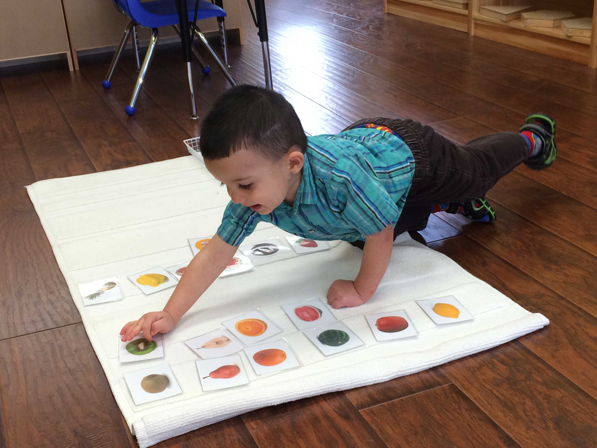

Our Program
At the Wonder Years Montessori, We aim to provide an environment for children where they are encouraged to learn by exploring, experiencing and refining the senses that are fundamental to their preparation for life.
Our Program provides a total curriculum, which fosters optimal growth of children in all areas including social, emotional, physical, communications/language and cognitive development.
A typical day would include a blend of structured and unstructured activities and is divided into the following components:
Practical Life+
Become responsible members of society
The Practical Life activities help students become responsible members of society. The activities help them learn and express a sense of order, independence, respect for the environment, respect for others, and at the same time, help to refine their concentration and hand-eye coordination. The Montessori Practical Life shelves are full of activities to reinforce pouring, spooning, tonging, dusting, sweeping, napkin folding, mixing colors, making bubbles, folding laundry, hanging clothes, using a screwdriver, locks and keys, screws and bolts, setting a table, using a whisk, etc. The activities are changed regularly so there are always new and exciting activities to refine the children’s fine motor skills and promote increased concentration skills.
Sensorial Development+
Explore their senses
The Sensorial area of the classroom comprises of scientifically designed material that help the child explore unique aspects of nature such as color, size, shape, etc. The child develops a deep understanding of these concepts using materials such as Pink Tower, Cylinder Blocks, Color Tablets, Knobless Cylinders, Smelling Bottles, Binomial Cube, Trinomial Cube and much more to explore through the senses! The child learn to refine his / her senses, acquire clear and conscious information and to be able to then make classifications in the environment.
Mathematics+
Develope a strong affinity
with numbers
Learning Math the Montessori way helps the child to develop a strong affinity for the numbers and its relations, using materials and activities to reinforce quantities and numerals 0 to 9. The Montessori approach focuses on numeration and the 10 base system. Highly abstract concepts are taught in a concrete way using Montessori materials, manipulating them using senso-motoric experience to get acquainted with the principle and concept involved.
Language+
Phonetics with interaction
The Language area consists of a variety of materials to teach and reinforce sounds, writing and reading. The child develops an in-depth understanding of phonetics, reading and comprehension using specially made materials such as name tracing cards with tracing paper, “Eye Spy” Tray, Sandpaper Letters, Cornmeal Tray, Movable Alphabet, Reading Cards, Sight Word Bingo etc.
Culture+
Science and art
This area focuses on the integrated study of science, the social sciences, and the arts. Children are exposed to a rich, stimulating variety of activities based on hands-on learning experiments. Children first experience general rules of the universe, the planet, and the continents. These are gradually broken down into smaller parts such as continents, countries and towns. A variety of manipulative tools are used to spark an interest in botany, zoology and geography and to help them explore and discover the world around them and help them become aware of the fact that they are part of the large family of humanity.
Outdoor Play+
Stay active!
Outdoor activities form an integral part of our curriculum. The children’s outdoor play area consists of a play center to encourage gross motor skills, a covered sandbox, cedar playhouse and a path along which the students can draw using sidewalk chalk and cycle. This Montessori outdoor environment fosters respect and appreciation for nature and there are plenty of opportunities for raking, watering, planting, running, jumping, bubble blowing and discovering.
Our School Hours
Child care services / holiday camp will be available during December holidays, March break and Summer holidays.
| Regular Program |
Morning Program |
Afternoon Program |
Extended Care (Before School) |
Extended Care (After School) |
|---|---|---|---|---|
| 8:30AM TO 3:30PM |
8:30AM TO 12:00PM |
1:00PM TO 3:30PM |
7:00AM TO 8:30AM |
3:30PM TO 6:00PM |
| Programs operate from September through mid-June | Programs operate from September through mid-June | Programs operate from September through mid-June | Programs operate from September through mid-June | Programs operate from September through mid-June | The school is closed for Civic/Statutory holidays/ 2 weeks in the December and 1 week in March. |
SUMMER CAMP REGISTRATION HAS OPENED!
From swimming lessons to kids cooking, The Wonder Years has everyhing ready for summer. To find out how your kids can learn and play click here to see our summer fun programs!
Program Schedule for Toddlers
| 7:00am - 8:30AM | Extended Care: A warm environment with different play centers, where children learn to socialize and build lasting friendships. |
|---|---|
| Beginning of the school day! Extended education ends. | |
| 8:30am - 10:00Am | 1. CIRCLE TIME Children move into a circle where they sing and are introduced to a large group activity or to a particular theme and read a story! 2. MONTESSORI WORK Children are given the chance to choose work in the classroom that excites and interests them. Guided learning also occurs for children who need help exploring the environment. FOCUS: Self help, motor, intellectual, emotional and social skills HEALTHY SNACK TIME! YUM! |
| 10:00AM - 11:00AM | Outdoor playtime, where different play based activities are setup for them to experience and explore. |
| 11:00AM - 12:00PM | WASHING OF THOSE LITTLE HANDS AND A HEALTHY LUNCH IS SERVED! |
| 12:00PM - 2:00PM | Nap time! (ZZzzzzzz) |
| 2:00PM - 3:00PM | Children wake up followed by a washroom routine. Children continue with their Montessori work. |
| 3:00PM - 3:30PM | MUSIC TIME! Children engage in different kind of songs (action songs, finger-play songs and turn taking songs). |
| End of the school day! Extended care begins. | 3:00PM - 6:00PM | Staff plan fun, stimulating activities that are developmentally appropriate, everyday. Some of the activities maybe geared at group, partner, or individual projects. Singing, movement, and games are also enjoyed during this time. And if weather permitting, children participate in an hour of outdoor fun! |
Program Schedule for CASA
| 7:00am - 8:30AM | Extended Care: A warm environment with different play centers, where children learn to socialize and build lasting friendships. |
|---|---|
| Beginning of the school day! Extended education ends. | |
| 8:30am - 11:00Am | 1. MONTESSORI WORK Children are given the chance to choose work in the classroom that excites and interests them. Guided learning also occurs for children who need help exploring the environment. 2. CIRCLE TIME Children move into a circle where they sing and are introduced to a large group activity or to a particular theme and read a story! HEALTHY SNACK TIME! YUM! |
| 11:00AM - 12:00PM | Outdoor playtime, where different play based activities are setup for them to experience and explore. |
| 12:00PM - 1:00PM | WASHING OF THOSE LITTLE HANDS AND A HEALTHY LUNCH IS SERVED! |
| 1:00PM - 3:00PM | During the second half of the day, children who sleep are directed to their sleeping area. Other children are directed to continue their Montessori work. Snack is offered during this period for those who wish to have some. (Children who sleep are also offered snack upon waking up) |
| 3:00PM - 3:30PM | MUSIC TIME! Children engage in different kind of songs (action songs, finger-play songs and turn taking songs). |
| End of the school day! Extended care begins. | 3:00PM - 6:00PM | Staff plan fun, stimulating activities that are developmentally appropriate, everyday. Some of the activities maybe geared at group, partner, or individual projects. Singing, movement, and games are also enjoyed during this time. And if weather permitting, children participate in an hour of outdoor fun! |